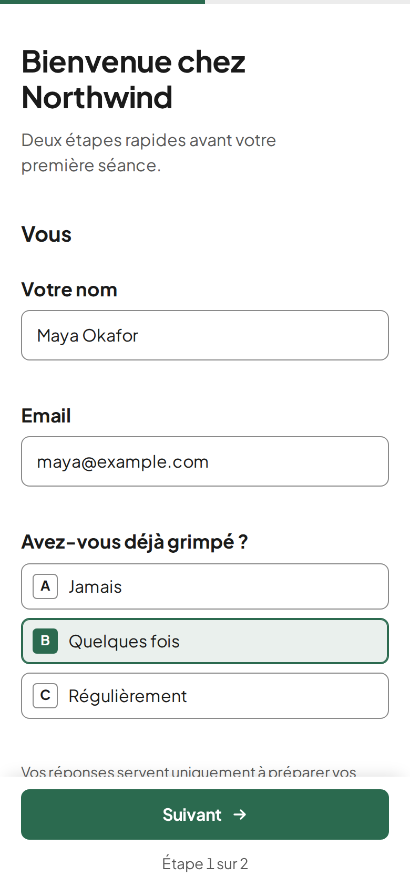

Votre agent écrit le formulaire. quikform l’affiche.
Un petit serveur de formulaires open source. Votre agent IA écrit un fichier JSON, quikform le vérifie et sert un formulaire pensé pour le téléphone sur votre propre domaine. Chaque réponse arrive dans un fichier SQLite que votre agent peut relire.
- Un seul exécutable
- Moins de 100 Mo de RAM
- Fonctionne sans JavaScript
- Licence MIT
$ quikform form put \
--project northwind accueil.json
ok accueil v1
accueil.json, tel que quikform l’affiche sur un téléphone. Northwind Climbing est une marque d’exemple.Comment ça marche
Vous décrivez le formulaire en une phrase. Votre agent fait le reste avec quatre commandes.
Votre agent écrit un fichier JSON
Les champs, les étapes, les conditions, le message de remerciement et la mention de confidentialité. Aucun HTML ni script.
quikform checkle relitChaque erreur revient avec son emplacement exact dans le fichier : l’agent la corrige avant que quiconque voie le formulaire.
form putle publieLe formulaire est en ligne sur votre domaine en dix secondes. Sa version augmente à chaque changement de contenu.
Les réponses reviennent
Chaque réponse est validée une seconde fois sur le serveur, enregistrée dans SQLite et, si vous le voulez, envoyée dans un groupe Telegram.
quikform responsesles donne à votre agent en JSON.
Ce qu’on en fait
Tout ce que vous récupérez aujourd’hui par email ou WhatsApp, puis recopiez à la main.
-
L’accueil d’un client
Les nouveaux membres ou clients répondent une fois, sur leur téléphone, avant le premier rendez-vous. Votre agent lit les réponses et prépare la séance.
short_text · email · single_choice · yes_no -
Un formulaire de contact pour un site statique
Le bouton « Contact » de votre site pointe vers
email · long_textformulaire.votresite.fr/contact. Les messages arrivent sur votre Telegram et restent dans votre base. -
Un questionnaire pour un seul client
Tarifs, services, horaires : tout ce qu’un agent doit savoir sur une entreprise, demandé par étapes au lieu d’un long échange d’emails. Le premier vrai formulaire de quikform, c’était exactement ça, pour une salle de sport.
number · multiple_choice · long_text -
Inscription à un cours ou un événement
Un lien public à partager dans un groupe de discussion. Un champ piège invisible et une limite d’envois tiennent les robots à l’écart.
short_text · email · single_choice -
Un retour après une prestation
Un court formulaire envoyé une fois le travail terminé. Les questions de suivi n’apparaissent que si une réponse les appelle.
yes_no · long_text · showIf -
Des demandes que votre agent traite
Demandes de devis, réservations, dossiers d’inscription : les réponses arrivent en JSON structuré, prêtes pour l’agent qui s’en occupe.
responses --json
Pourquoi si petit
- Pourquoi un formulaire de contact demanderait-il un compte chez un autre service ?
- Pourquoi votre agent cliquerait-il dans un éditeur visuel alors qu’il sait écrire un fichier ?
- Pourquoi un serveur de formulaires aurait-il besoin de plusieurs gigaoctets de mémoire et de plusieurs bases ?
- Pourquoi vos réponses vivraient-elles ailleurs qu’à côté de votre projet ?
quikform garde un fichier JSON par formulaire et un fichier SQLite par projet, sur votre serveur, derrière le serveur web que vous avez déjà. Les composants de champs sont écrits une fois et testés : chaque formulaire que votre agent écrit hérite de la même validation et du même confort sur téléphone.
Ce qu’il y a dedans
Ce qu’il faut à un formulaire pour être rempli sur un téléphone et vérifié sur le serveur.
- Sept types de champs
- Texte court, texte long, email, nombre, choix unique, choix multiple et oui ou non. Chacun peut être obligatoire, avoir des limites et un texte d’aide, ou n’apparaître que si une autre réponse l’appelle.
- Vérifié deux fois
quikform checkvalide la définition avant la mise en ligne, et le serveur valide de nouveau chaque envoi. Un champ obligatoire masqué par une condition ne bloque jamais l’envoi.- Pensé pour le téléphone
- Un formulaire court tient sur une page ; un long se découpe en étapes avec une barre de progression. Les labels restent visibles, le clavier s’adapte au champ, le bouton est sous le pouce. Les réponses en cours restent dans le navigateur jusqu’à l’envoi.
- Fonctionne sans JavaScript
- La page est rendue sur le serveur. Le petit script ajoute seulement les étapes, la validation en direct et les champs conditionnels.
- Votre marque, pas la nôtre
- Logo et couleur d’accent par projet, et aucune mention « propulsé par ». Aucun traceur ni bannière de cookies.
- Alertes et confidentialité
- Un message Telegram à chaque réponse. Une mention de confidentialité sur chaque formulaire, et des réponses supprimées après 12 mois par défaut.
- Quatre langues
- Textes de l’interface en anglais, français, allemand et thaï, choisis par formulaire.
# un projet par domaine
$ quikform project init northwind \
--domain formulaire.northwind.example \
--accent "#2b6a4f"
# toute la boîte à outils de l'agent
$ quikform check accueil.json
$ quikform form put --project northwind \
accueil.json
$ quikform responses --project northwind --json
# le serveur, derrière Caddy ou un autre proxy
$ quikform serve --port 8787Chaque commande ne touche qu’un seul projet. Codes de sortie : 0 succès, 1 échec, 2 erreur d’utilisation.
Installation
quikform se compile depuis les sources avec Bun 1.4 ou plus récent. Le résultat est un seul fichier, dist/quikform, à copier sur votre serveur.
Il n’écoute que sur 127.0.0.1 : placez Caddy ou un autre proxy devant pour le HTTPS. Le README détaille le service systemd et le bloc Caddy.
$ git clone https://github.com/jonathanvouilloz/quikform
$ cd quikform
$ bun install
$ bun run build # écrit dist/quikform
$ export QUIKFORM_HOME=~/.local/share/quikform
$ export QUIKFORM_SECRET=$(openssl rand -hex 32)
$ ./dist/quikform serveOpen source, licence MIT
Le code, le format des formulaires et les tickets sont sur GitHub. Copiez-le, hébergez-le, proposez vos modifications.